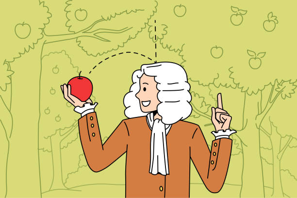

Today’s Agenda
II. How and why do governments use violence against the people inside their borders?
- Analyzing Weber’s (1946) Answer
Justin Leinaweaver (Fall 2025)
“Today we do not take a stand on this question. I state only the purely conceptual aspect for our consideration: the modern state is a compulsory association which organizes domination. It has been successful in seeking to monopolize the legitimate use of physical force as a means of domination within a territory. To this end the state has combined the material means of organization in the hands of its leaders, and it has expropriated all autonomous functionaries of estates who formerly controlled these means in their own right. The state has taken their positions and now stands in the top place” (Weber 1946, p5).
Weber (1918/1946)
The state is a “compulsory association which organizes domination”
aka
The state IS violence
Maps are:
Neither true nor false
Limited in their accuracy
Partial representations
Useful for only some uses
A reflection of the interests of the designer
Scientific models are:
Neither true nor false
Limited in their accuracy
Partial representations
Useful for only some uses
A reflection of the interests of the designer

Scientific models are:
Neither true nor false
Limited in their accuracy
Partial representations
Useful for only some uses
A reflection of the interests of the designer

Scientific models are:
Neither true nor false
Limited in their accuracy
Partial representations
Useful for only some uses
A reflection of the interests of the designer
Frieden, Lake and Schultz (2016)
Who are the interests?
What are the institutions?
What are the interactions?
Weber (1918/1946)
Who are the interests?
What are the institutions?
What are the interactions?
Weber’s (1918/1946) Model
Politicians want to expropriate value and increase their power
The state monopolizes the legitimate use of force
To maintain control, leaders must ensure mass obedience from the people and the administrative state
Therefore, the state is a compulsory association of organized domination
For Next Class
Olson, Mancur. (1993). Dictatorship, Democracy, and Development. The American Political Science Review. 87(3): 567–76.
- Submit analysis to Canvas